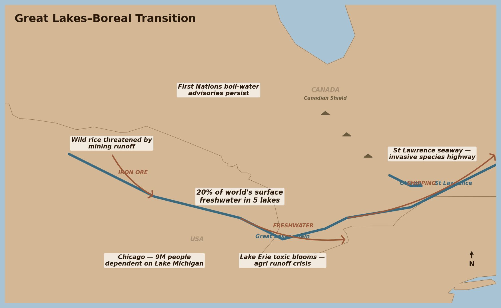

Great Lakes–Boreal Transition376M people
where glacially carved basins hold freshwater that generates the lake-effect snow that feeds them
The Great Lakes hold one-fifth of all the surface freshwater on earth — Superior, Michigan, Huron, Erie, Ontario — and the people who have lived beside them longest cannot drink from them. In Neskantaga First Nation, northern Ontario, the boil-water advisory has been in effect since 1995. Twenty-eight years without safe tap water, in a community surrounded by more freshwater than most countries possess.
Lives Lived Here
In Flint, Michigan, a mother runs the tap for three minutes before filling her daughter's cup — a habit learned during the lead crisis of 2014-2019 and never unlearned, because trust, once broken by the water, does not return with a press release. Flint sits on the edge of the auto industry's collapse: General Motors left, then the tax base left, then the city switched water sources to save money, and the water came out brown. The state apologised. The pipes are still being replaced.
In Green Bay, Wisconsin, a dairy farmer walks his third-generation operation knowing it will likely be his last. Milk prices set by commodity traders in Chicago cannot sustain a 200-head herd against the economies of scale that reward 5,000-head confined operations. His manure lagoon, regulated by the state, feeds the same phosphorus cycle that blooms in Lake Erie 400 miles east. He knows this. He also knows he cannot afford the cover crop rotation that would hold the phosphorus in the soil. The subsidy pays for corn. It does not pay for restraint.
In Thunder Bay, Ontario, an Anishinaabe elder watches the wild rice beds in the Kaministiquia River thin for the fourth consecutive year. Manoomin — wild rice — is not a crop to the Ojibwe. It is a relative, a treaty partner, a reason to stay in place. The rice needs stable water levels and clean sediment. It is getting neither: upstream mining exploration disturbs the watershed, and the changing freeze-thaw cycle alters the hydrology that manoomin has adapted to over millennia. The elder harvests what grows. She teaches her granddaughter the technique — pushing the canoe through the shallows, bending the stalks, knocking the grain — because the knowledge must survive even if the rice does not.
In Sarnia, Ontario — Chemical Valley — the Aamjiwnaang First Nation lives surrounded by 62 industrial facilities within 25 kilometres. The birth sex ratio has shifted. The cancer rates are elevated. The air monitoring data is available; the community reads it. They are not ignorant of what is happening. They are trapped by it — the reserve boundary was drawn before the refineries arrived, and the refineries will not move.
In Thunder Bay, Ontario, an Anishinaabe elder watches the wild rice beds in the Kaministiquia River thin for the fourth consecutive year. Manoomin — wild rice — is not a crop to the Ojibwe. It is a relative, a treaty partner, a reason to stay in place. The rice needs stable water levels and clean sediment. It is getting neither: upstream mining exploration disturbs the watershed, and the changing freeze-thaw cycle alters the hydrology that manoomin has adapted to over millennia. The elder harvests what grows. She teaches her granddaughter the technique — pushing the canoe through the shallows, bending the stalks, knocking the grain — because the knowledge must survive even if the rice does not.

Reference map. Country boundaries and features are approximate.
What Presses
The weight on Great Lakes–Boreal Transition
Neskantaga, Ontario — Three hundred people live in Neskantaga First Nation, 400 kilometres north of Thunder Bay, accessible only by air for most of the year. The community sits beside Attawapiskat Lake, surrounded by boreal forest and fresh water. Since 1995, they have not been able to drink from their taps. The water treatment plant was built to inadequate specifications; the federal government has promised to fix it, set deadlines, and missed them. In October 2020, the community evacuated after oily sheen was found in the water supply. They went to Thunder Bay hotels. They came back. The advisory remained. Children born in Neskantaga in 1995 are now thirty. They have never known safe tap water in their own home, in a country with more freshwater per capita than almost any nation on earth.
Lake Erie, Ohio-Ontario border — Lake Erie is the shallowest of the five Great Lakes, and it is dying in slow motion. Each summer, phosphorus from corn and soy farms in Indiana and Ohio washes down the Maumee River and feeds algal blooms that can cover 2,000 square kilometres — visible from space, toxic to drink, lethal to fish. In August 2014, Toledo shut off water to 500,000 people for three days. The International Joint Commission set phosphorus reduction targets. The farms have not met them, because the subsidy structure rewards yield per acre, not soil health, and the fertiliser goes on in April whether the cover crop is there or not. The algae will bloom again this summer. They bloom every summer now.
Chemical Valley, Sarnia, Ontario — The Aamjiwnaang First Nation reserve was established in 1827. The petrochemical plants arrived in the 1940s and kept arriving. Today, 62 industrial facilities operate within 25 kilometres of the reserve. The community has documented a shift in birth sex ratios, elevated cancer rates, and chronic respiratory illness. Air quality monitors show what the wind carries. The community is not ignorant of the data. They read it, publish it, and live inside it. The reserve boundary cannot move. The refineries will not. The question of who was there first has a clear answer that changes nothing about who breathes the air today.
Three extractive streams flow outward from this bioregion — tar sands crude, Midwest grain, and transition minerals — worth hundreds of billions at their destination markets. What remains is the phosphorus in Lake Erie, the mercury in the English-Wabigoon river system, the tailings ponds in the Sudbury Basin, the PFAS in the groundwater, and 28 years of boil-water advisories in Neskantaga. The freshwater is not running out. It is being rendered undrinkable. 16 killed (3 months); shale oil and natural gas, corn, soybeans, and dairy products, bitumen crude oil (oil sands) leaving; 176 fires (7 days).
The lakes do not distinguish between the water drawn by a pipe and the water drawn by a root. They hold what they receive and release what is taken. It is the people around them who must decide what taking means — and whether twenty-eight years without safe water in Neskantaga is a technical problem or a confession.
For Prayer
For communities enduring armed conflict across Great Lakes–Boreal Transition — 16 killed in the past three months. For protection of civilians and for those who have lost loved ones.
Especially for United States, facing the most severe convergence of crises in this region. For those making impossible decisions about whether to stay or flee, and for those who cannot choose.
For humanitarian workers and missionaries in Great Lakes–Boreal Transition — for their safety, their courage, and their capacity to reach those most in need.
For every act of resistance and care in Great Lakes–Boreal Transition — communities sharing food, farmers saving seed, neighbours sheltering neighbours. That these small acts of defiance outlast the crisis.
Out of the depths have I cried to you, O Lord; Lord, hear my voice; let your ears consider well the voice of my supplication.
Most merciful God, who by the death and resurrection of your Son Jesus Christ delivered and saved the world: grant that by faith in him who suffered on the cross we may triumph in the power of his victory; through Jesus Christ your Son our Lord, who is alive and reigns with you, in the unity of the Holy Spirit, one God, now and for ever.
Amen.
Seeds of Hope
The Anishinaabe have a word for their relationship to water: nibi. Water is not a resource in Anishinaabe law — it is a relative, a being with rights, and the responsibility for its care falls to women.
For Reflection
What would it mean to accept this contradiction—that your comfort and their suffering exist in the same global system—rather than trying to resolve it from the outside?
How might sitting with this discomfort change how you pray?
Looking Ahead
- The structural pressures on this bioregion are intensifying on parallel tracks that do not share a policy framework.
- The green transition is accelerating demand for nickel, cobalt, and lithium from the Canadian Shield — Ontario's EV battery plant investments (Stellantis-LG in Windsor, Volkswagen in St.
- Thomas) require mineral supply chains that pass through Cree and Ojibwe territory.
- Lake Erie harmful algal bloom season June-October -- phosphorus loading from Indiana and Ohio corn farms determines whether Toledo's 500,000 residents face another drinking water crisis
- Enbridge Line 5 pipeline regulatory decisions -- Michigan's legal challenge to the 71-year-old pipeline crossing the Straits of Mackinac could force a reroute or shutdown
- First Nations boil-water advisory count -- Canada publishes quarterly updates; Neskantaga has been under advisory since 1995; any lifting signals infrastructure progress
Carry This
What to bring with you from this briefing
Take Action
Organizations working at the nodes this briefing traces
Monitors mining operations across the Canadian Shield and boreal region, documenting environmental and human rights impacts of nickel, cobalt, and lithium extraction for transition minerals.
Directly tracks the Canadian Shield mining corridors for nickel, cobalt, and lithium that threaten boreal watersheds and Anishinaabe treaty lands — the mineral extraction the briefing identifies as the emerging crisis alongside legacy industrial contamination.
Advocates for Great Lakes water quality and habitat protection, campaigns against toxic runoff and industrial pollution, and mobilizes community action around phosphorus reduction and algal bloom prevention.
Works on the phosphorus runoff from Ohio and Indiana farms driving Lake Erie's toxic algal blooms — the agricultural contamination cycle the briefing identifies as one of the region's defining crises.
Political advocacy organization representing 39 First Nations in Ontario. Campaigns for resolution of long-term boil-water advisories, treaty rights protection, and Indigenous governance over traditional territories including wild rice waters.
Represents the First Nations communities the briefing identifies as living beside the world's largest freshwater system yet unable to safely drink it — decades-long boil-water advisories while mining and industrial interests extract from the same watersheds.
Binational Canada-US body monitoring Great Lakes water quality under the Great Lakes Water Quality Agreement. Publishes triennial assessments of lake health, phosphorus loading, toxic contamination, and ecosystem integrity.
Produces the authoritative monitoring data on the Great Lakes system's health — ice cover decline, warming water, algal bloom extent, and contaminant levels — that the briefing draws on to describe the system's deterioration.
Indigenous-led organization founded by Winona LaDuke working on pipeline resistance, wild rice (manoomin) protection, and renewable energy transitions on tribal lands in Minnesota and Wisconsin.
Defends the wild rice waters and boreal watersheds threatened by pipeline corridors and mining runoff that the briefing identifies as directly impacting Anishinaabe and Cree communities' food sovereignty and treaty rights.
Grassroots organization supporting community-led efforts to protect Great Lakes water from industrial contamination, large-scale diversion, and agricultural runoff across the basin.
Connects community-level water protection to the systemic threats the briefing documents — dairy farm runoff, industrial legacy contamination, and the tension between the Great Lakes Compact's diversion protections and the ongoing degradation of water quality.
Generated 2026-03-18